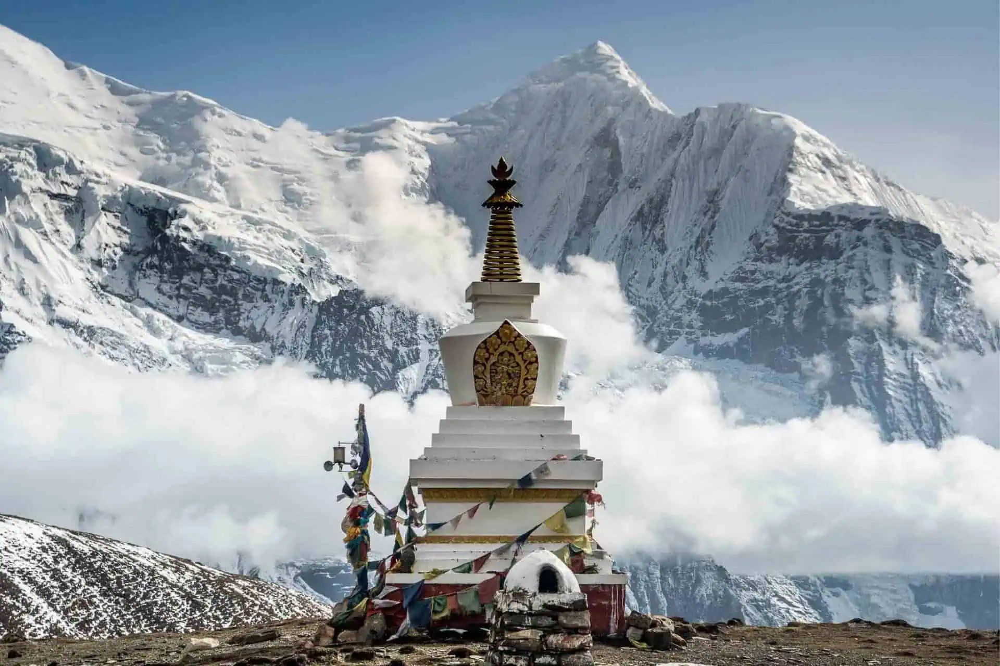
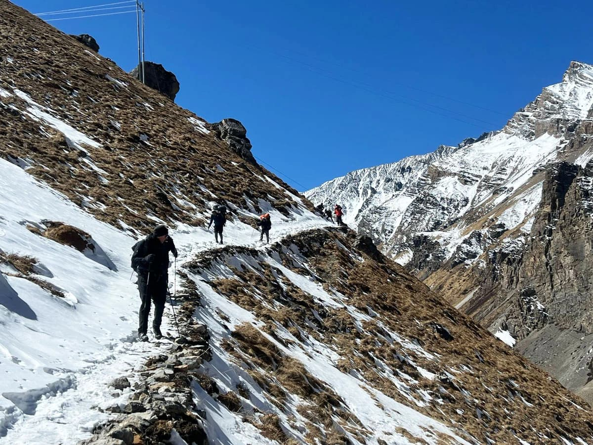
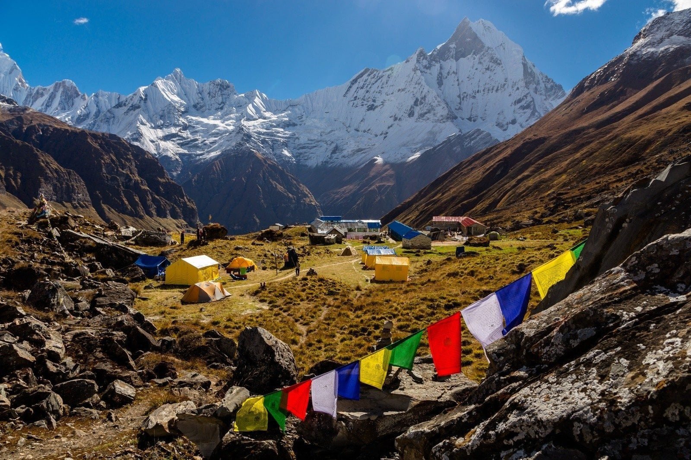

TOURS AND EXPEDITION
Experience one of the world's greatest treks through diverse landscapes, from lush subtropical forests to the high-altitude desert of the Tibetan plateau, culminating at the breathtaking Thorong La Pass.



Discover our carefully curated Annapurna Circuit packages designed to make your journey safe, comfortable, and unforgettable.
View Trek PackagesThe Annapurna Circuit is often described as the world's best long-distance trek, offering an unparalleled diversity of landscapes, cultures, and ecosystems. This epic journey takes you around the entire Annapurna massif, crossing the formidable Thorong La Pass at 5,416 meters, passing through traditional villages, and experiencing the dramatic transition from lush subtropical valleys to the arid Tibetan-like plateau of the Manang region.
Witness the entire Annapurna massif including Annapurna I (8,091m), Annapurna II, III, IV, Gangapurna, and the iconic Machhapuchhre (Fishtail Mountain). The circuit offers 360-degree views of some of the world's most spectacular peaks.
Experience the rich cultural tapestry of Nepal's ethnic communities including Gurungs, Manangis, Thakalis, and Tibetans. Visit ancient monasteries, traditional villages, and sacred pilgrimage sites that have remained unchanged for centuries.
Trek through five distinct climatic zones - from subtropical forests to alpine meadows and high-altitude desert. The dramatic changes in vegetation and wildlife make this trek a naturalist's dream.
Spring (March-May) offers blooming rhododendrons and clear skies. Autumn (October-November) provides stable weather and excellent visibility. Winter (December-February) is possible but cold, especially at higher altitudes. Monsoon season (June-September) is challenging due to rain, leeches, and potential landslides.
This is a moderate to challenging trek requiring good fitness levels. Daily walking distances range from 5-7 hours over varied terrain. The crossing of Thorong La Pass (5,416m) is the most challenging day. Pre-trek training should include cardiovascular exercise, hiking with weight, and stair climbing. Proper acclimatization is built into the itinerary.
Required permits include the Annapurna Conservation Area Permit (ACAP) and the Trekker's Information Management System (TIMS) card. These are arranged by your trekking company. The circuit can be done in either direction, but the traditional counter-clockwise route provides better acclimatization for crossing Thorong La.
Stay in comfortable teahouses offering basic rooms with twin beds. Hot showers are available at extra cost in most villages. Meals are hearty and varied - dal bhat (rice and lentils), noodles, soups, momos, and Western options. The circuit has better facilities than most remote treks, with electricity and charging available in most places.
The trek includes careful acclimatization days in Manang (3,540m) before crossing Thorong La. Guides are trained in altitude sickness recognition and basic first aid. Travel insurance covering emergency helicopter evacuation is mandatory. Medical facilities are available in major villages along the route.
The construction of roads on parts of the traditional circuit has shortened the trek. However, new trails have been developed to avoid road sections, maintaining the wilderness experience. Many trekkers now start further east to avoid road walking. The core high-altitude sections remain road-free and spectacular.
Capture sunrise over the Annapurna range from Poon Hill. Document the dramatic landscapes of the Manang region. Photograph ancient monasteries in Braga and Kagbeni. The Thorong La crossing offers spectacular high-altitude photography opportunities.
Support local communities by using teahouses and buying local products. Follow Leave No Trace principles. Use refillable water bottles with purification tablets. Respect cultural sites and traditions. The Annapurna Conservation Area Project (ACAP) works to preserve the region's natural and cultural heritage.
Prepare for dramatic temperature variations - from warm days in the lowlands to freezing nights at high altitude. Afternoon clouds often obscure peaks. Wind can be strong on the Thorong La crossing. Be prepared for all conditions including potential snow at higher elevations, especially in shoulder seasons.
The highest point of the trek and one of the most challenging passes in the world accessible to trekkers. The crossing typically begins before dawn to avoid afternoon winds. The panoramic views from the pass encompass the entire Annapurna and Dhaulagiri ranges. Prayer flags mark the summit, where trekkers celebrate their achievement before the long descent to Muktinath.
Often called "Nepal's Tibet," Manang is a high-altitude desert valley with a distinct Tibetan Buddhist culture. The acclimatization days here allow exploration of ancient monasteries, traditional villages, and dramatic landscapes. The Gangapurna Lake and glacier offer spectacular photo opportunities. The village has good facilities including bakeries, cafes, and a small cinema.
One of the world's highest lakes and an optional side trip from the main circuit. The turquoise waters set against the backdrop of the Great Barrier and Tilicho Peak create one of the most spectacular scenes in the Himalayas. The challenging trail to the lake adds 2-3 days to the trek but is considered a highlight by many trekkers.
A sacred pilgrimage site for both Hindus and Buddhists located at the base of Thorong La. The temple complex features 108 water spouts and eternal flames fed by natural gas. Pilgrims believe visiting Muktinath brings salvation. For trekkers, it marks the completion of the most challenging section and the beginning of the descent into the Kali Gandaki valley.
The gateway to Upper Mustang and one of the most picturesque villages on the circuit. With its narrow alleyways, medieval architecture, and ancient monastery, Kagbeni feels like stepping back in time. The village marks the transition from the Manang region to the Kali Gandaki valley and offers stunning views of Nilgiri and Dhaulagiri peaks.
Famous for its spectacular sunrise views over the Annapurna and Dhaulagiri ranges. Although not on the traditional circuit route, many trekkers add this detour at the beginning or end of their journey. The 360-degree panorama from the viewpoint is considered one of the best mountain views in Nepal, particularly at sunrise when the peaks glow in golden light.